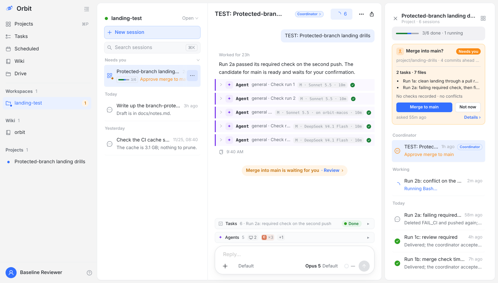
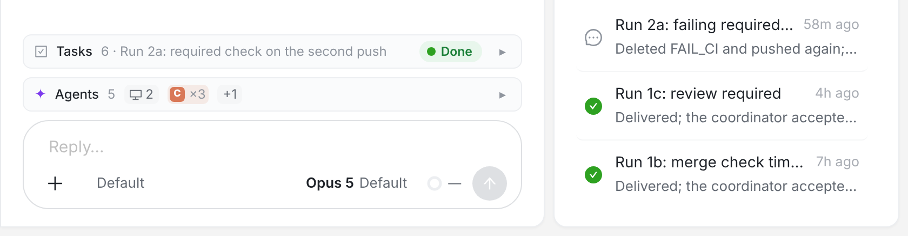
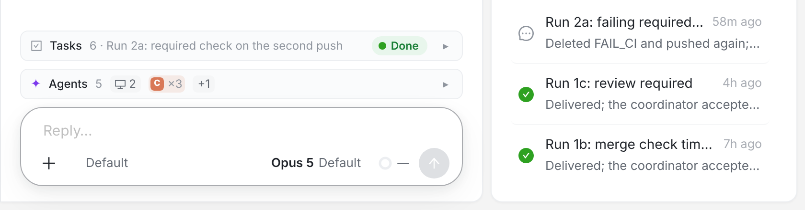
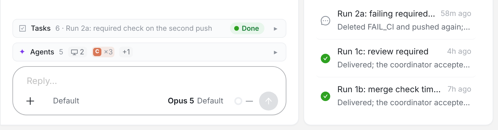
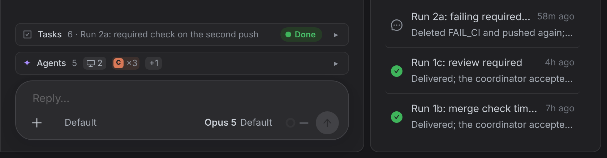
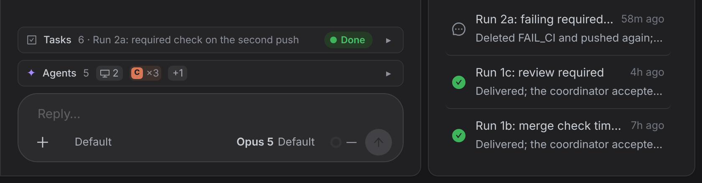
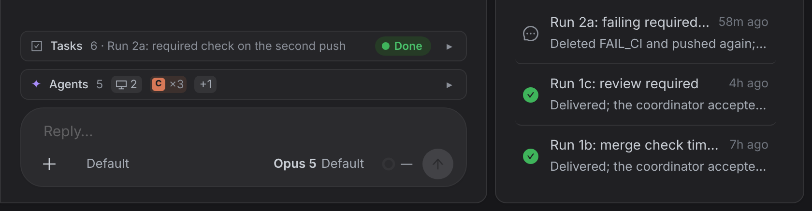

真实会话页（本分支 build；右栏窗口 kit 的 coordinator，加上 Tasks / Agents 条），1440×820，2x。三列只换 .composer-box 的描边颜色和 box-shadow，其它一律不动。
| 元素 | 圆角 | 描边（实测） | 阴影 | 结果 |
|---|---|---|---|---|
| 面板（会话列表+对话、右栏、任务详情） | 12px | --border-subtle #eceef1 · 236 | --panel-shadow 0 1px 2px α.04 | 几乎平贴在画布上 |
| Tasks / Agents 条 | 8px | --border-subtle · 236 | 无 | 平 |
| Composer（今天） | 24px | --border #dee0e3 · 222 | 0 2px 10px α.05 + 0 10px 30px α.04 | 全页唯一"浮起"的东西；描边比所有面板深一档；阴影 30px 模糊在 16px 处被面板底边切断 |
2026-11-26 的 "panels on a canvas"（2cd162c3c4）定了"一个圆角、一个间距、一个高度"。composer 是那之前的样式，没跟上。







src/web/src/index.css 的 .composer-box：border 颜色 --border → --border-subtlebox-shadow → var(--panel-shadow)（窄屏 <961px 没有这个变量 → 无阴影，与窄屏面板一致）